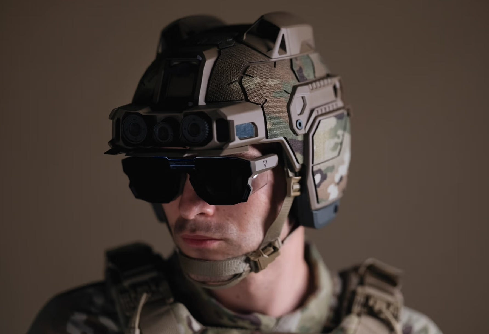
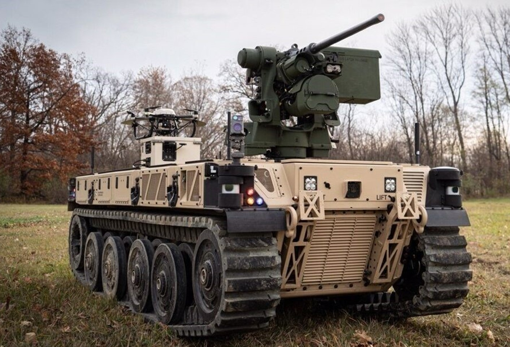
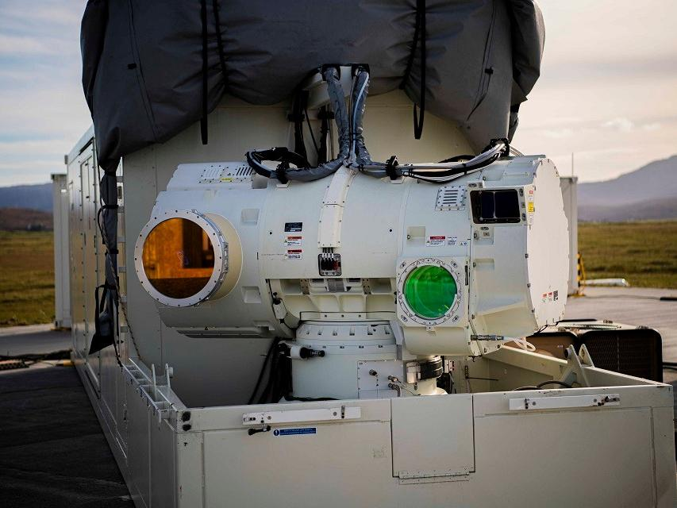
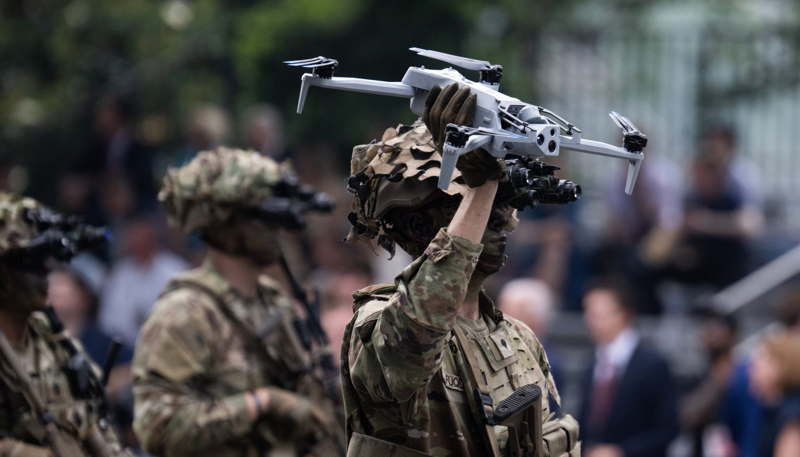
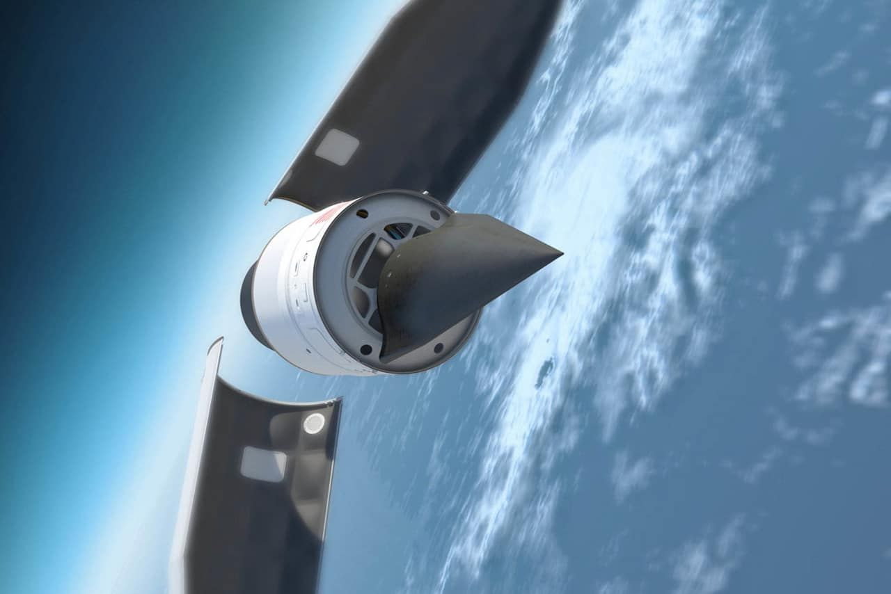

Future Innovation
Emerging technologies shaping the next generation of military capabilities, from hypersonic weapons to artificial intelligence and quantum computing.

The future of the U.S. military is expected to increasingly rely on virtual and augmented reality (VR/AR) technologies to improve training, planning, and battlefield awareness. Soldiers will likely use AR systems to view real-time data such as maps, enemy positions, and mission updates directly in their line of sight, while VR environments will provide highly realistic combat simulations for safer and more effective training. These tools will make military operations faster, more informed, and more adaptable.
Companies like Anduril Industries are expected to play a major role by integrating artificial intelligence, sensor networks, and autonomous systems into immersive military platforms. Their technology helps combine data from drones, cameras, and battlefield sensors into a single digital view, improving decision-making in real time. This supports the broader shift toward networked and AI-driven warfare systems.
Other defense and technology companies such as Microsoft, Lockheed Martin, and Northrop Grumman are also developing AR headsets, simulation systems, and mission planning tools. These systems will work together to create a fully connected “digital battlefield” where soldiers and commanders share the same live operational picture. Overall, the U.S. military is moving toward a future where VR and AR become essential tools for combat readiness and coordination.

The future of U.S. military operations will increasingly rely on autonomous vehicles across air, land, and sea to improve speed, reduce risk to personnel, and expand operational reach. These systems will be used for missions such as surveillance, reconnaissance, logistics resupply, mine detection, and combat support. Powered by artificial intelligence and advanced sensor systems, autonomous vehicles will be able to operate independently or in coordination with human-controlled forces.
Major defense contractors are driving much of this development. Lockheed Martin and Northrop Grumman are building autonomous aircraft and unmanned combat systems, while Boeing is advancing autonomous aerial platforms and drone technologies for both military and logistical use. General Dynamics is focusing on autonomous ground vehicles designed for transport, reconnaissance, and battlefield support.
In addition, companies like Raytheon Technologies and emerging defense startups are developing integrated autonomy systems that link multiple vehicles into coordinated networks or “swarms.” Together, these innovations are shaping a future battlefield where autonomous systems handle high-risk tasks continuously, allowing human forces to focus more on strategy, decision-making, and oversight.

Artificial intelligence (AI) is expected to become one of the most important technologies in the future of the U.S. military. Its rapid development will enhance decision-making, automate data analysis, and improve speed and accuracy across operations. AI will be used to process large amounts of battlefield information in real time, helping commanders respond faster and more effectively in complex environments.
Major defense companies like Lockheed Martin, Northrop Grumman, and Raytheon Technologies are integrating AI into weapons systems, surveillance platforms, and command-and-control networks. These systems will support functions such as threat detection, predictive maintenance, target identification, and autonomous navigation. AI will also strengthen cyber defense by identifying and responding to attacks faster than human operators.
In the future, AI will be embedded across nearly all military domains, including drones, autonomous vehicles, intelligence systems, and training simulations. It will enable more connected and adaptive operations where machines and humans work together in real time. As a result, the U.S. military will increasingly rely on AI to improve efficiency, reduce risk to personnel, and maintain a strategic advantage over adversaries.

Directed energy weapons (DEWs) are an emerging class of military technology that use concentrated energy—such as lasers or high-powered microwaves—to disable or destroy targets. In the current U.S. military, these systems are still largely in testing and limited deployment, but they are being developed to counter threats like drones, missiles, and small boats. Unlike traditional weapons, DEWs can engage targets at the speed of light and with very low cost per shot.
Defense companies such as Lockheed Martin, Raytheon Technologies, and Northrop Grumman are leading development of laser-based systems for air defense and missile interception. These weapons are being tested for use on ships, ground vehicles, and aircraft to provide fast, precise defense against incoming threats. The U.S. Navy and Army are actively experimenting with prototypes designed to protect bases and fleets from drone swarms and missile attacks.
In the future, directed energy weapons are expected to become more powerful, compact, and widely deployed across all military branches. They could be integrated into layered defense systems alongside missiles and electronic warfare tools, providing near-instant response capabilities. As technology improves, DEWs may become a key part of U.S. military strategy.

Emerging drone warfare is rapidly reshaping modern U.S. military operations by making unmanned systems a core part of surveillance, strike, and support missions. Drones are used for real-time intelligence gathering, precision targeting, and battlefield monitoring without putting pilots at risk. Smaller tactical drones can be deployed by individual units, while larger systems provide long-range reconnaissance and strike capabilities.
Defense companies such as General Atomics, Lockheed Martin, and Northrop Grumman are leading development of advanced unmanned aerial systems used by the U.S. military. These include long-endurance surveillance drones like the MQ-9 Reaper and next-generation stealth and autonomous platforms designed for contested environments. Many of these systems are becoming more autonomous, capable of operating in coordinated groups and responding dynamically to threats.
In the future, drone warfare is expected to expand into “drone swarms,” where large numbers of low-cost, networked drones operate together to overwhelm defenses and gather intelligence. They will also be integrated with artificial intelligence and electronic warfare systems to improve decision-making and survivability. As a result, drones will become a dominant force in U.S. military strategy across air, land, and maritime domains.

Emerging hypersonic missile technology is becoming a major focus of U.S. military innovation due to its ability to travel at speeds greater than Mach 5 while remaining highly maneuverable. Unlike traditional ballistic missiles, hypersonic weapons can change trajectory mid-flight, making them much harder to track and intercept. These systems are being developed to provide rapid global strike capabilities and enhance deterrence against advanced adversaries.
Defense contractors such as Lockheed Martin, Northrop Grumman, and Raytheon Technologies are leading U.S. hypersonic missile development. Current programs include glide vehicles and air-launched hypersonic systems designed for both offensive strike and strategic defense roles. The U.S. military is also investing heavily in testing and propulsion technologies to improve speed, range, and accuracy while overcoming engineering challenges like extreme heat and material stress.
In the future, hypersonic missiles are expected to become a key part of the U.S. strategic arsenal, integrated with satellite tracking, artificial intelligence, and advanced targeting systems. They will likely be used for time-sensitive, high-value targets where speed is critical. As development continues, hypersonic weapons will play a major role in shaping global military balance and modern deterrence strategy.